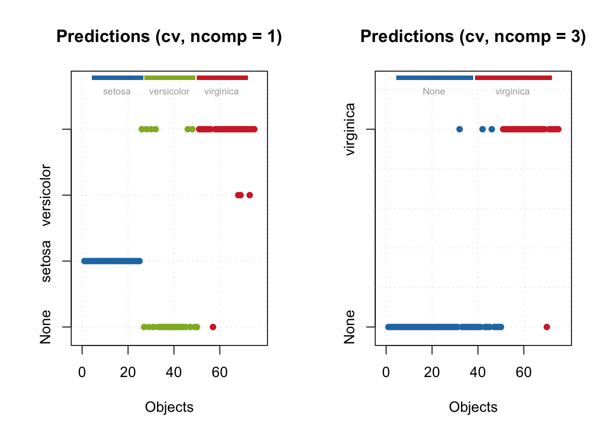
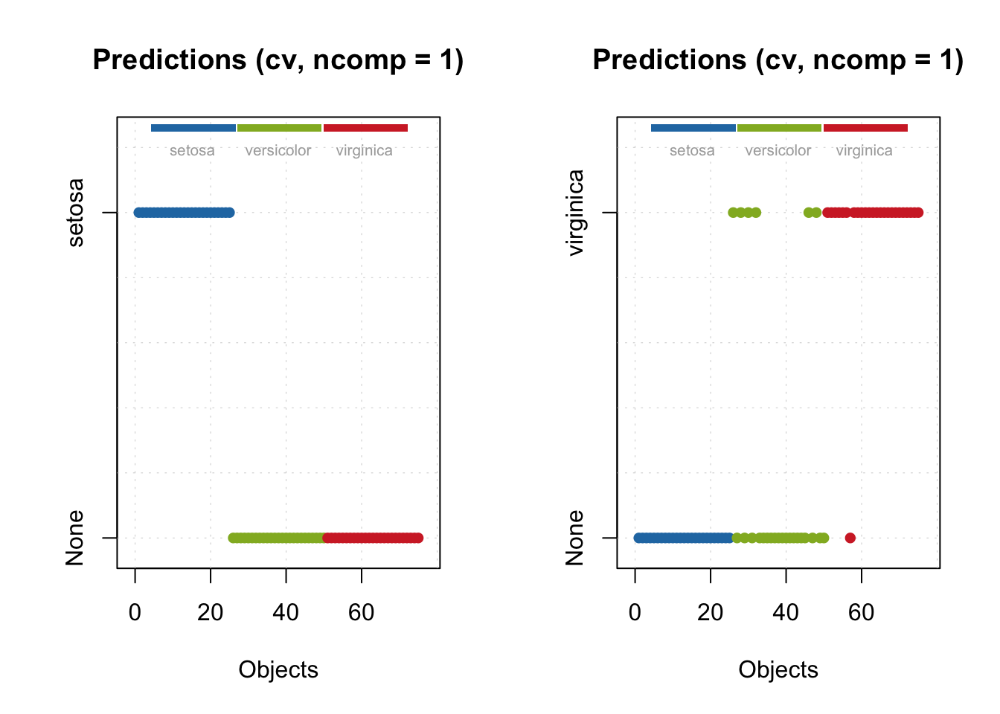
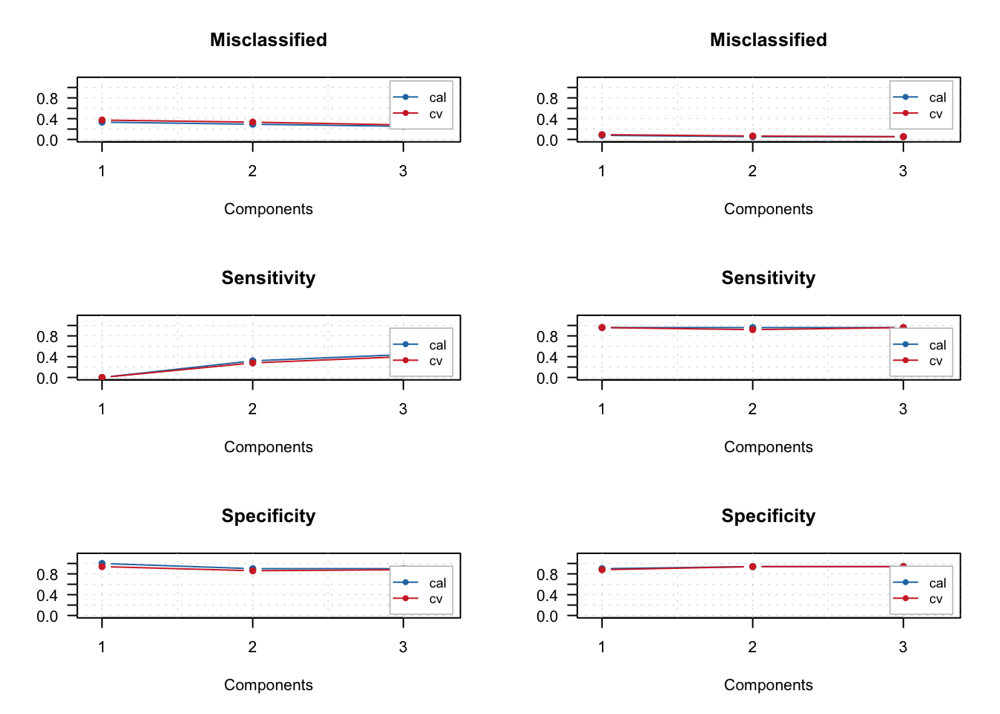
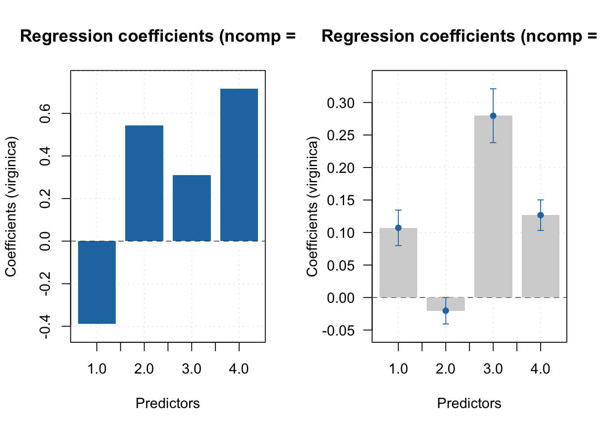
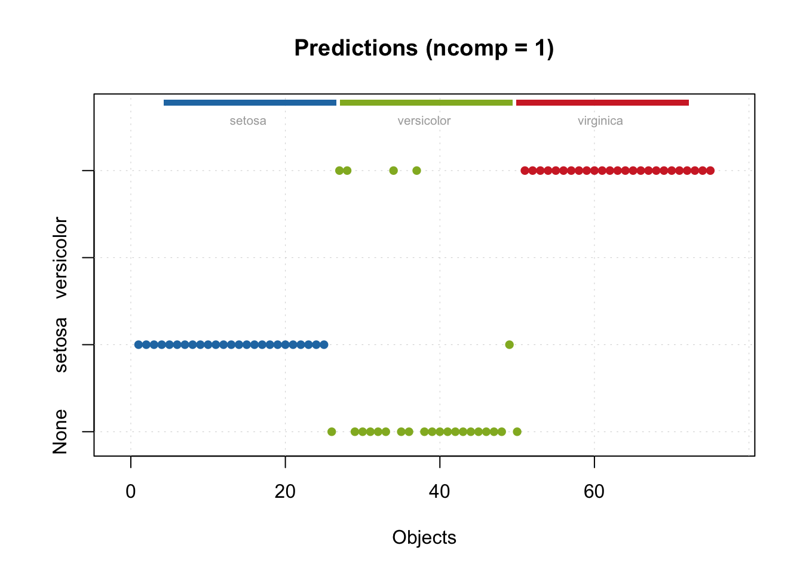
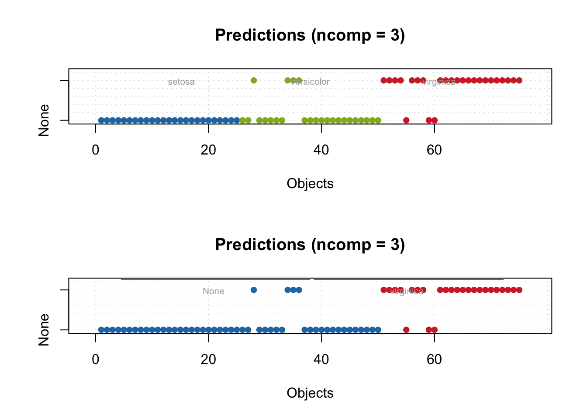
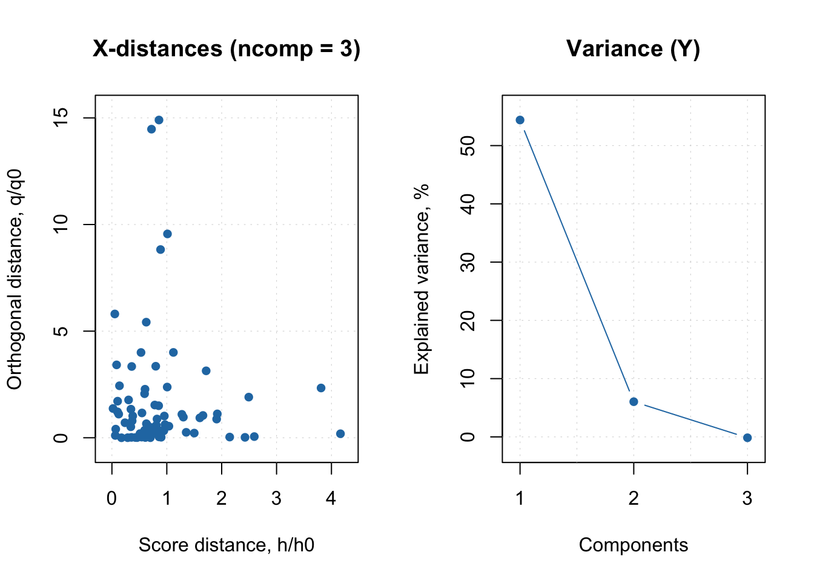

library(mdatools)PLS_DA Analysis
Using the MDA-Tools package1 as an alternative to mixOmics package. I have used mixomics before to perform PLS-DA analysis and the method is fairly straightforward2, so I would like to explore this method to compare the two.
PLS-DA is a common algorithm used for metabolomics and other omics datasets3, and often used for categorization of features in metabolomics.
Loading Packages
Getting the data ready
Data needs to be in the form of vectors with categories
data(iris)
cal.ind = c(1:25, 51:75, 101:125)
val.ind = c(26:50, 76:100, 126:150)
Xc = iris[cal.ind, 1:4]
Xv = iris[val.ind, 1:4]
cc.all = iris[cal.ind, 5]
cv.all = iris[val.ind, 5]
show(cc.all) [1] setosa setosa setosa setosa setosa setosa
[7] setosa setosa setosa setosa setosa setosa
[13] setosa setosa setosa setosa setosa setosa
[19] setosa setosa setosa setosa setosa setosa
[25] setosa versicolor versicolor versicolor versicolor versicolor
[31] versicolor versicolor versicolor versicolor versicolor versicolor
[37] versicolor versicolor versicolor versicolor versicolor versicolor
[43] versicolor versicolor versicolor versicolor versicolor versicolor
[49] versicolor versicolor virginica virginica virginica virginica
[55] virginica virginica virginica virginica virginica virginica
[61] virginica virginica virginica virginica virginica virginica
[67] virginica virginica virginica virginica virginica virginica
[73] virginica virginica virginica
Levels: setosa versicolor virginicacc.vir = cc.all == "virginica"
cv.vir = cv.all == "virginica"
show(cc.vir) [1] FALSE FALSE FALSE FALSE FALSE FALSE FALSE FALSE FALSE FALSE FALSE FALSE
[13] FALSE FALSE FALSE FALSE FALSE FALSE FALSE FALSE FALSE FALSE FALSE FALSE
[25] FALSE FALSE FALSE FALSE FALSE FALSE FALSE FALSE FALSE FALSE FALSE FALSE
[37] FALSE FALSE FALSE FALSE FALSE FALSE FALSE FALSE FALSE FALSE FALSE FALSE
[49] FALSE FALSE TRUE TRUE TRUE TRUE TRUE TRUE TRUE TRUE TRUE TRUE
[61] TRUE TRUE TRUE TRUE TRUE TRUE TRUE TRUE TRUE TRUE TRUE TRUE
[73] TRUE TRUE TRUECarry out PLS-DA modelling and look at the summaries
# Now we can calibrate the models:
m.all = plsda(Xc, cc.all, 3, cv = 1)
m.vir = plsda(Xc, cc.vir, 3, cv = 1, classname = "virginica")
summary(m.all)
PLS-DA model (class plsda) summary
------------------------------------
Info:
Number of selected components: 1
Cross-validation: full (leave one out)
Class #1 (setosa)
X cumexpvar Y cumexpvar TP FP TN FN Spec. Sens. Accuracy
Cal 91.97 46.36 25 0 50 0 1 1 1
Cv NA NA 25 0 50 0 1 1 1
Class #2 (versicolor)
X cumexpvar Y cumexpvar TP FP TN FN Spec. Sens. Accuracy
Cal 91.97 46.36 0 0 50 25 1.00 0 0.667
Cv NA NA 0 3 47 25 0.94 0 0.627
Class #3 (virginica)
X cumexpvar Y cumexpvar TP FP TN FN Spec. Sens. Accuracy
Cal 91.97 46.36 24 5 45 1 0.90 0.96 0.920
Cv NA NA 24 6 44 1 0.88 0.96 0.907summary(m.all, nc = 3)
PLS-DA model (class plsda) summary
------------------------------------
Info:
Number of selected components: 1
Cross-validation: full (leave one out)
Class #3 (virginica)
X cumexpvar Y cumexpvar TP FP TN FN Spec. Sens. Accuracy
Cal 91.97 46.36 24 5 45 1 0.90 0.96 0.920
Cv NA NA 24 6 44 1 0.88 0.96 0.907summary(m.all$calres, nc = 3)
PLS-DA results (class plsdares) summary:
Number of selected components: 1
Class #3 (virginica):
X expvar X cumexpvar Y expvar Y cumexpvar TP FP TN FN Spec. Sens.
Comp 1 91.969 91.969 46.356 46.356 24 5 45 1 0.90 0.96
Comp 2 5.500 97.468 6.878 53.233 21 5 45 4 0.90 0.84
Comp 3 2.186 99.654 4.816 58.049 24 3 47 1 0.94 0.96
Accuracy
Comp 1 0.920
Comp 2 0.880
Comp 3 0.947summary(m.vir)
PLS-DA model (class plsda) summary
------------------------------------
Info:
Number of selected components: 3
Cross-validation: full (leave one out)
Class #1 (virginica)
X cumexpvar Y cumexpvar TP FP TN FN Spec. Sens. Accuracy
Cal 98.53 61.31 24 3 47 1 0.94 0.96 0.947
Cv NA NA 24 3 47 1 0.94 0.96 0.947Looking at the confusion Matrix
getConfusionMatrix(m.all$calres) setosa versicolor virginica None
setosa 25 0 0 0
versicolor 0 0 5 20
virginica 0 0 24 1getConfusionMatrix(m.vir$calres) virginica None
virginica 24 1
None 3 47Various plots available in the MDA-Package
See the documentation for details4.
par(mfrow = c(1, 2))
plotPredictions(m.all)
plotPredictions(m.vir)
par(mfrow = c(1, 2))
plotPredictions(m.all, nc = 1)
plotPredictions(m.all, nc = 3)
par(mfrow = c(3, 2))
plotMisclassified(m.all, nc = 2)
plotMisclassified(m.vir)
plotSensitivity(m.all, nc = 2)
plotSensitivity(m.vir)
plotSpecificity(m.all, nc = 2)
plotSpecificity(m.vir)
par(mfrow = c(1, 2))
plotRegcoeffs(m.all, ncomp = 3, ny = 3)
plotRegcoeffs(m.vir, ncomp = 1, show.ci = TRUE)
Prediction Plots
res = predict(m.all, Xv, cv.all)
summary(res)
PLS-DA results (class plsdares) summary:
Number of selected components: 1
Class #1 (setosa):
X expvar X cumexpvar Y expvar Y cumexpvar TP FP TN FN Spec. Sens.
Comp 1 92.924 92.924 42.703 42.703 25 1 49 0 0.98 1
Comp 2 4.560 97.484 11.216 53.920 25 0 50 0 1.00 1
Comp 3 1.790 99.274 1.717 55.637 25 0 50 0 1.00 1
Accuracy
Comp 1 0.987
Comp 2 1.000
Comp 3 1.000
Class #2 (versicolor):
X expvar X cumexpvar Y expvar Y cumexpvar TP FP TN FN Spec. Sens.
Comp 1 92.924 92.924 42.703 42.703 0 0 50 25 1.00 0.0
Comp 2 4.560 97.484 11.216 53.920 10 4 46 15 0.92 0.4
Comp 3 1.790 99.274 1.717 55.637 10 6 44 15 0.88 0.4
Accuracy
Comp 1 0.667
Comp 2 0.747
Comp 3 0.720
Class #3 (virginica):
X expvar X cumexpvar Y expvar Y cumexpvar TP FP TN FN Spec. Sens.
Comp 1 92.924 92.924 42.703 42.703 25 4 46 0 0.92 1.00
Comp 2 4.560 97.484 11.216 53.920 25 4 46 0 0.92 1.00
Comp 3 1.790 99.274 1.717 55.637 24 4 46 1 0.92 0.96
Accuracy
Comp 1 0.947
Comp 2 0.947
Comp 3 0.933par(mfrow = c(1, 1))
plotPredictions(res)
res21 = predict(m.vir, Xv, cv.all)
summary(res21)
PLS-DA results (class plsdares) summary:
Number of selected components: 3
Class #1 (virginica):
X expvar X cumexpvar Y expvar Y cumexpvar TP FP TN FN Spec. Sens.
Comp 1 93.107 93.107 54.394 54.394 25 4 46 0 0.92 1.00
Comp 2 1.588 94.695 6.039 60.433 24 4 46 1 0.92 0.96
Comp 3 2.641 97.336 -0.149 60.284 22 4 46 3 0.92 0.88
Accuracy
Comp 1 0.947
Comp 2 0.933
Comp 3 0.907res22 = predict(m.vir, Xv, cv.vir)
summary(res22)
PLS-DA results (class plsdares) summary:
Number of selected components: 3
Class #1 (virginica):
X expvar X cumexpvar Y expvar Y cumexpvar TP FP TN FN Spec. Sens.
Comp 1 93.107 93.107 54.394 54.394 25 4 46 0 0.92 1.00
Comp 2 1.588 94.695 6.039 60.433 24 4 46 1 0.92 0.96
Comp 3 2.641 97.336 -0.149 60.284 22 4 46 3 0.92 0.88
Accuracy
Comp 1 0.947
Comp 2 0.933
Comp 3 0.907par(mfrow = c(2, 1))
plotPredictions(res21)
plotPredictions(res22)
par(mfrow = c(1, 2))
plotXResiduals(res21)
plotYVariance(res22)
Further Reading:
MixOmics dataset: http://mixomics.org/ (alternate method in R)
How to perform PLS-DA using Mixomics: https://github.com/SidhuK/R_for_Metabolomics/tree/main/PLS-DA